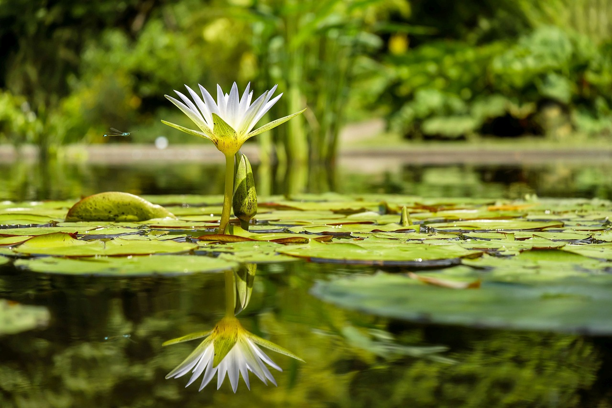
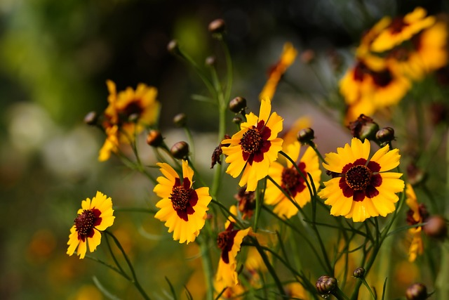
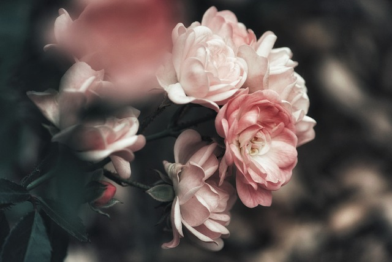
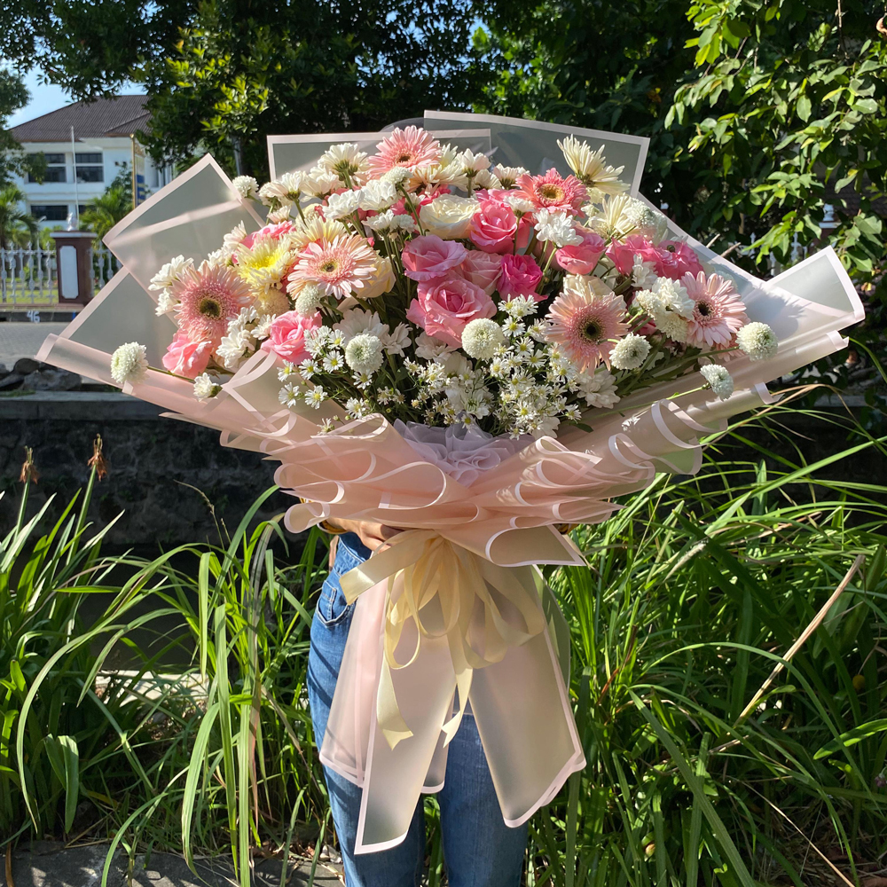

Bunga indah TERATAI
Teratai (Nymphaea) adalah nama genus untuk tanaman air dari suku Nymphaeaceae. Dalam bahasa Inggris dikenal sebagai water-lily atau waterlily. Di Indonesia, teratai juga digunakan untuk menyebut tanaman dari genus Nelumbo (lotus). Pada zaman dulu, orang memang sering mencampuradukkan antara tanaman genus Nelumbo seperti seroja dengan genus Nymphaea (teratai). Pada Nelumbo, bunga terdapat di atas permukaan air (tidak mengapung), kelopak bersemu merah (teratai berwarna putih hingga kuning), daun berbentuk lingkaran penuh dan rimpangnya biasa dikonsumsi. Teratai terdiri dari sekitar 50 spesies yang tersebar dari wilayah tropis hingga daerah subtropis seluruh dunia. Teratai yang tumbuh di daerah tropis berasal dari Mesir.
Tanaman tumbuh di permukaan air yang tenang. Bunga dan daun terdapat di permukaan air, keluar dari tangkai yang berasal dari rhizoma yang berada di dalam lumpur pada dasar kolam, sungai atau rawa. Tangkai terdapat di tengah-tengah daun. Daun berbentuk bundar atau bentuk oval yang lebar yang terpotong pada jari-jari menuju ke tangkai. Permukaan daun tidak mengandung lapisan lilin sehingga air yang jatuh ke permukaan daun tidak membentuk butiran air. Bunga terdapat pada tangkai yang merupakan perpanjangan dari rimpang. Diameter bunga antara 5–10 cm.
BUNGA MAWAR INDAH
Bunga mawar merupakan jenis bunga yang terkenal di dunia. Salah satu yang paling populer adalah jenis bunga mawar merah. Meskipun menjadi bunga primadona, nyatanya belum banyak orang yang memahami ciri-ciri dari bunga berduri tersebut. Adapun deskripsi tentang bunga mawar yang berkaitan dengan ciri-cirinya yaitu sebagai berikut: Mawar dapat tumbuh dengan subur di daerah beriklim sedang. Meskipun demikian, beberapa jenisnya ada yang mampu tumbuh di wilayah dengan iklim subtropis. Bunga mawar merupakan jenis tanaman semak yang asalnya dari Genus rosa. Adapun nama asalnya dijadikan sebagai nama bunga ini. Mawar adalah tanaman semak berduri yang tingginya dapat mencapai 2 hingga 5 meter. Bunga mawar terdiri dari 5 helai daun mahkota, kecuali jenis Rosa sericea yang hanya mempunyai 4 helai daun mahkota. Umumnya, duri yang terdapat pada batang tubuh mawar berbentuk seperti pengait yang berguna sebagai pegangan sewaktu merambat ke tumbuhan lain.

Bunga mawar merupakan jenis bunga yang terkenal di dunia. Salah satu yang paling populer adalah jenis bunga mawar merah. Meskipun menjadi bunga primadona, nyatanya belum banyak orang yang memahami ciri-ciri dari bunga berduri tersebut. Adapun deskripsi tentang bunga mawar yang berkaitan dengan ciri-cirinya yaitu sebagai berikut: Mawar dapat tumbuh dengan subur di daerah beriklim sedang. Meskipun demikian, beberapa jenisnya ada yang mampu tumbuh di wilayah dengan iklim subtropis. Bunga mawar merupakan jenis tanaman semak yang asalnya dari Genus rosa. Adapun nama asalnya dijadikan sebagai nama bunga ini. Mawar adalah tanaman semak berduri yang tingginya dapat mencapai 2 hingga 5 meter. Bunga mawar terdiri dari 5 helai daun mahkota, kecuali jenis Rosa sericea yang hanya mempunyai 4 helai daun mahkota. Umumnya, duri yang terdapat pada batang tubuh mawar berbentuk seperti pengait yang berguna sebagai pegangan sewaktu merambat ke tumbuhan lain.
BUNGA TULIP
Tulip (bahasa latin: Tulipa) merupakan nama genus untuk 100 spesies tumbuhan berbunga yang termasuk ke dalam keluarga liliaceae. Tulip berasal dari Asia Tengah, tumbuh liar di kawasan pegunungan Pamir dan pegunungan Hindu Kush dan stepa di Kazakhistan Negeri belanda terkenal sebagai negeri bunga tulip. Tulip juga merupakan bunga nasional iran dan turki.

Tulip merupakan tumbuhan tahunan berumbi yang tingginya antara 10–70 cm, daunnya berlilin, berbentuk sempit memanjang berwarna hijau nuansa kebiru-biruan, dan bunganya berukuran besar terdiri 6 helai daun mahkota. Tulip hasil persilangan menghasilkan bunga berwarna tunggal, merah, oranye kuning hiaju biru ungu, atau berbagai macam kombinasi dan gradasi warna. Tulip menghasilkan biji-biji berbentuk bundar pipih yang dibungkus kapsul kering.
Tulip adalah bunga yang melambangkan keindahan dan kesempurnaan. Bunga ini berasal dari Turki dan memiliki beragam makna, termasuk cinta dan pengampunan. Namun ada beberapa arti lainnya yang bisa kamu ketahui juga lho, seperti : Kesempurnaan dan Cinta Ini berlaku untuk pasangan yang sedang merasa jatuh cinta satu sama lain supaya saling memiliki rasa kesempurnaan dan cinta bagi sesama. Tidak hanya untuk sebuah pasangan sejoli saja, tetapi arti bunga tulip bisa disampaikan bagi keluarga supaya selalu serasi di dalam lingkungan keluarganya. Penghargaan Dan Sebagai Hadiah Khusus Pada intinya tiap orang yang sukses memperoleh apa yang dicita–citakan umumnya, dari kawan, teman dekat, dan keluarga pasti akan memberi bunga ini sebagai bentuk ikut bersuka cita dan memberi ucapan selamat. Kelimpahan dan Kemakmuran Ada yang memperoleh rejeki berlebihan dan memberi beberapa rejekinya untuk bersedekah ke orang yang kurang sanggup. Kemungkinan bunga tulip menjadi aspek seorang memperoleh kemakmuran itu.
About me
Halo! Nama saya RANI MULYANINGSIH, dan saya senang bertemu dengan Anda melalui web ini. Saya adalah seorang pelajar, tetapi lebih dari itu, saya adalah seorang yang penuh semangat dalam menjelajahi dunia dan menggali pengetahuan baru.
Saya lahir dan dibesarkan di Sumedang,25 JULI 2007 tempat di mana saya belajar banyak hal tentang kehidupan ini.saya masih dalam tahap belajar dalam mempelajari web
Saya berharap dapat terus menjalin hubungan dengan Anda dan membagikan pengalaman serta pengetahuan kita. Jika Anda memiliki pertanyaan atau ingin berbagi cerita, jangan ragu untuk menghubungi saya. Terima kasih sudah membaca tentang saya, dan mari kita menjelajahi dunia bersama!
Populer post
  Follow me
Saya senang Anda tertarik untuk mengikuti perjalanan saya. Mari kita jalin hubungan yang lebih dekat melalui platform ini! Saya aktif berbagi kisah, pemikiran, dan pengalaman saya dalam berbagai topik yang saya minati. Dari petualangan saya di [tempat yang Anda kunjungi], hingga refleksi saya tentang kehidupan dan kebahagiaan, Anda akan menemukan berbagai konten yang menarik dan bermanfaat. Selain itu, saya juga senang berinteraksi dengan para pengikut saya. Jangan ragu untuk memberikan komentar, pertanyaan, atau sekadar mengucapkan hai. Saya selalu bersemangat untuk berbagi pandangan dan pengalaman dengan Anda semua.